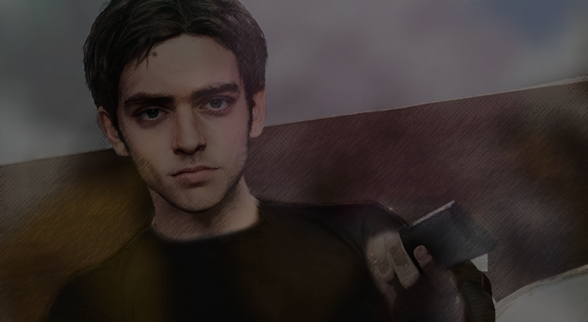

JUNE 14 2017 - 3:32PM
It’s the last day of school for the year for Jonathon and his two best friends, Edan and Seb.
Edan: “I’ll see you guys outside alright?”
Jon: “Aight''
Jonathan responds. While everyone else had left the classroom, The two stay back as Jonathon is seen currently packing up. Seb has a curious look on his face as he walks over,
Seb: “So, you're going to All Hero High right?”
Jon: “Yeah why?” Jon quickly responded.
Seb: “Good.” Seb said quietly
Jon: “You good?”
Seb: “Yeah, let's just go already.” Seb responds.
Jon:“Okay?” Jonathon says while being weirded out.
His bag fully packed and zipped up, both of them walk and stroll out of the classroom. Few seconds passed as Edan still waited outside.
Edan: “Where the hell are they?” he said looking confused.
He quickly looked from left to right wondering where the hell they were. Soon he sees Seb and Jon
Seb: “I'll see you at Hero High.” Seb says smiling at Jon as he walks away to his mother's car while Jon smiles back.
Jon: “Aight let’s go.” Jon says looking back to Edan as they both start to walk the other way.
Few minutes later Jon and Edan walk home as they talk to each other
Edan: “So, I am a little curious, how are you going to get into Hero High?” Edan asks Jon: “Oh, well you can still get in by learning how to build like cool gadgets and medical stuff to help out heroes.” Jon happily responds
Edan: “So you're not aiming to be a hero, but help heroes?”
Jon: “I mean, I guess. It’s the best I can do having no powers ‘n such.”
Edan: “Huh, I guess that’s still cool as shit. My dad won’t let me go cause he says he wants me to be near home all the time” Edan responds.
Jon: “That’s fuckin stupid, but hey. That school isn’t that all bad right?”
Edan: “It’s shit..”
Jon: “Oh… well-”
Before Jon could finish his sentence gunshots are heard not far as a car is seen drifting away from a bunch of cops, As the car gets closer to them. The two quickly realize the old lady in the street next to them.
Edan: “Oh shit! Ayo bitch getcho ass outta there!” Edan shouts at the lady while Jon panickes and quickly runs to the lady to quickly move her.
Edan:“Jon what the fuck are you doing!”
Jon: “I gotta save her!” The car gets even closer as the gunshots get louder
Edan:“Hurry up!” Edan says while panicking as well.
The old lady is unable to move very fast with her crutches, Jon notices the car is getting and can’t think of any other choices left.
Jon: “Fuck it.” Jon quickly hesitates and puts his arms out with his eyes closed as he screams “Stop!”
“Oh fuck!” the getaway driver says as he quickly drives to the side. Before the car crashes into the store to the right of them a few screams are heard before it quickly faints away as some blood splashes onto Jonathan, Jonathon quickly opens his eyes and turns his head to shortly realize what he had just done. The car not only crashed into the store, but a mother and her baby in a stroller, both quickly crushed with their brains splattered everywhere near the store, some even getting on Jonathon.
Edan: “Oh no..” Edan slowly whispered as a crowd of people quickly gathered around.
Before Jonathon could even get a word in, A group of superheroes shortly arrive to see the aftermath. One of them, Speedlight.
Speedlight: “What did you do?!”
“I- I-” Jonathan was completely speechless as he slowly looked down at himself half-covered in blood.
Jon: “I d-didn’t mean i-i-”
Speedlight: “Good going kid!”
One of the other heroes tells him to calm down as they both walk away to the car, As if things couldn’t get worse. The Number 1 Hero In America was called in and flew down. Mr. Platinum. He didn’t seem so happy upon seeing the accident, He quickly asks one of the heroes what caused it as Speedlight points at Jon.
Speedlight: “He did it!”. Jonathon quickly hesitates
Jon: “I DIDN'T MEAN TO, I WAS JUST TRYING MY BEST. That’s what you guys always say!”
Mr. Platinum slowly turns around to Jon as he looks down at him as he stares at him for a few seconds.
Mr Platinum: “Go Home”
Jonathan's heart shatters after hearing those words, he slowly puts his arms down and walks away.
Edan: “Jon! Wait!”
Jon: “Leave me alone.”
He walks away as Edan stands back and stares in worriness. Edan without hesitation quickly shouts at Mr. Platinum
Edan: “G-Go Fuck Yourself!” before quickly running away to Jonathon.
4:01PM
Jonathon slowly walks into Auntie Julie & Michelle’s apartment where they currently reside, He tries to sneak in but the door starts to creak loudly which alerts Julie immediately.
Julie: “Ah, yer back, how was school?”
Jon: “G-good, it was good.”
Julie: “That’s goo-”
Julie suddenly realizes the blood all over him.
Julie: “What the hell happened to you?!” Few seconds of solid silence.
Jon: “I fell on a rock.”
2 MONTHS LATER
During the summer holidays, Jon mainly stayed inside playing racing games inside his room while a half eaten bag of Doritos next to him. Michelle eventually comes back from work as Julie is seen washing the dishes, Michelle screams out Jons name in excitement. Jon jumps up quickly pausing his game as he walks outside his room.
Jon: “Yeah?” Jon asked
Michelle: “Look what just arrived!”
Jon sees Michelle waving her hand with an envelope from All Hero High.
Jon: “Oh shit! It arrived?!” Jon screamed
Michelle: “Hehe yeah, just saw it in the letterbox. Here take it! Also watch that mouth ya little shit.”
Jon quickly runs over to grab and runs to his room in excitement, he had never felt this happy ever since he got his Limited Time Captain Platinum figure. Jon quickly sat down in the middle of the room as he quickly ripped open the envelope.
Julie: “Jon be careful with that!” shouted Julie in the kitchen
Jon: “I will!” Jon responded.
The envelope now fully opened as he started to read the letter. Julie and Michelle peeking through the door as they smile at him. as Jon kept on reading the letter his expression went from joy to concern, then melancholy. Julie and Michelle slowly looked at each other in worry as they could read his face clear as day.
Not long after reading the letter, Jon quickly ripped it all up as tears start to leak out of his eyes. Julie and Michelle quickly walk in to try and control Jon as he starts to punch the wall in frustration and sadness.
Jon: “WHY ME, WHY DID IT HAVE TO ME BE. WHAT DID I EVER FUCKING DO”
To that very day, Jonathan not only was never the same. But never felt the same.
FEBRUARY 3 2020 - PRESENT DAY

Jonathan, now 15 years old. Now currently goes to the same school as Edan, as well as his two new friends. Ronny and Ara, Jon has lost most interest in hero duty and superheroes in general and mainly just resorts to laying out in his room. He's also lost many interest in his hobbies and suffered from many mental breakdowns, only for him to hide it all back up and forget it all ever even happened.
He still resides with his aunties as he mostly stays in now. The time is 11:10PM as Jon is currently watching a new anime that everyones been watching, he immediately turns his TV off after instantly getting bored and even disappointed. Jon slowly gets out of his bed as he decides to go out to get some snacks, putting on his hoodie as he walks out of his room to the front door. Auntie Julie, still awake hears the bedroom door creak open and immediately questions what he’s doing,
Jon: “I’m just gonna go to the gas station to get snacks” Jon says while putting on his shoes.
Julie: “Be safe okay?” Julie says concerned
Jon: “I’ll be alright” Jon replies as he walks out and closes the door behind him.
After 15 minutes of walking around the suburbs of Philadelphia Jon soon arrives at the gas station and walks in without hesitation quickly going into the snack ile, while Jon stares at his hands constantly counting his change. A few distant explosions are heard in the background,
Jon: “The fuck? Did you hear that just now?” Jon said, flicking his head to the cashier. Cashier: “Heard what?” The cashier quickly replied in shock,
Jon: “The explos-”
Before Jon could finish his sentence a Pro-Hero landed down in front of the gas station as Jons first instinct is to hide behind the ile. The cashier is seen running towards the back as the doors slide open, big footsteps are heard going to the back as the cashier starts to scream for help. The cashier struggles to find his keys as the backdoor is locked, the footsteps getting closer as he starts to scream for help. Jon shivering in fear locked in position not wanting to get caught, moments later a deep-manly voice is heard
“Don’t do it Seth…I don’t want to do this.”
Cashier: “Just leave me alone man! I already told you I know nothing about it!”
The footsteps stop as everything goes quiet, the only thing hearable is the distant crying of the cashier
“I’m going to give you one last chance, where did you hide it…”
silence fills the air for a few seconds as Jon slowly grabs for a snack and tucks it into his hoodie.
Cashier: “Fuck you!” the cashier replies,
“I’m sorry Seth…”
The Pro-Hero puts both of their hands on the cashiers head as the cashier starts to scream in agony. Jon covers his ears in fear still hiding in the back ile, the screaming suddenly stops as a little explosion is heard as well as a bunch of blood splatters is heard as well. Everything once again goes quiet as Jon tries to breathe quietly, currently panicking for his life, moments later the now half-covered in blood Pro-Hero slowly steps out of the back and turns his head from side to side to then quickly walk out and use their explosion powers to fly out of the scene. Jon suddenly gets up as he quickly runs to the back in curiosity, blood and bits of brains all over the room as the cashiers dead body lies on the floor. The neck still flows down blood as Jon stares, fully paralyzed. After staring a bit in disbelief, Jon walks out of the gas station only to quickly vomit on the floor. After letting it all out he quickly runs away from the gas station as fast as he possibly could.
RONNY’S APARTMENT - 12:02AM
Edan relaxes back on a couch as Ronny is currently laying back down past asleep on the other couch, the shower is heard on in the background as Ronny's phone currently blasting music on the table as the Edan constantly flicking through the channels on the TV. His phone starts to vibrate and his ringtone starts to go off
Ronny: “Why is that still your ringtone” Ronny questioned,
Edan: ”Cause it fucking slaps?”
Ronny: “Wha-?”
Edan picks up his phone and answers it.
“Hello?”
“Yo Edan you there?”
“Jon?”
“Hey, you free right now?”
“I’m at Ronny’s right now, why?”
“Oh Okay, is it aight if I come over?”
“Yeah sure, we’re just chilling out.”
“Ah aight, i’ll see y'all soon.”
“Alright, See you in a few.”
“Seeya..”
A FEW MINUTES PASS...
After walking for a while, Jon eventually arrives at the apartment complex. He walks up the stairs onto the 3rd floor while on the phone with Julie.
Jon: “I’m just gonna stay over at Ronnys tonight, I’ll be okay”
Julie: “Well atleast come home early in morning, your gonna need to grab your bag for school”
Jon: “Alright I will, seeya later.”
Julie: “Okay, stay safe, love ya bye bye bye bye.”
After he hangs up he strolls down the hallway, while doing so he walks past a slightly ripped Mr Platinum poster, Jon stops his track as he quickly walks back to the poster. He starts staring at it with anger and regret. Not long after staring at it he punches the poster, hurting his hand.
Jon: “FUUCK!”
The loud screaming quickly alerts Edan as he opens the apartment door few doors down,
Edan: “The hell did you do?”
Jon: “N-nothing nothing I’m good I’m good”
Edan: “Oh god your hand!”
Jonathan struggles to speak as his hand is seen damaged and bruised as Jon in pure pain
Jon: “I’m f-fine let’s just forget this-s h-happened”
Edan: “Jesus christ just get in”
As Jon walks in holding his injured hand while Edan closes the door behind him, Jon sees Ron laying down snoring. Jon without double-thinking quickly hits Ronny in the nuts with his injured hand, causing both of them to immediately scream in pain.
Jon: “OW FUCK!”
Ronny: “AAAAAH YOU FUCKING FAGGOT!”
Jon: “W-worth it…”
Jon quickly sits on the couch arm as Ronny groaning in pain with his hands quickly covering his crotch.
Edan: “Why did you do that?” Edan questions Jon.
Jon: “It was funny?” Edan stares at Jon for a few seconds.
Edan: “I guess it was funny.”
He says as he sits back down on the other couch. As they relax back on the couches, the shower is heard in the background being used.
Jon: “Who’s in the shower?” Jon asks Ronny
Ronny: “Oh that’s Ara”
Jon: “Why’s she using yours?”
Ronny: “Her Uncle’s shower is not working properly”
Jon: “Ohh okay”
Edan: “So, what made you decide to come over?”
Jonathan takes a solid few seconds to think to himself as he almost forgot.
Jon: “Oh yeah fucking crazy wacky shit just happened.”
Edan: “Go on.”
Jon: “Well long story short, I almost fucking died”
Ronny: “Gooo on!
Jon: “I was at the gas station trying to get some grub cause i wuz fuckin starving, still am. But anyways I was doing the usual going to the back to get some Pringles, when all of a sudden. Fucking hero douchebag arrives and is all like “Hello i am the hero time to fucking kill anyone I see on sight” and blasted the bloody cashiers head open, then he just strolled out like it was fucking nothing. I was left there all fucking confused, and my dumbass thought it would be a good idea to get a close look at it. Long story short i vomited afterwards and got the fuck outta there”
Edan: “Wow.”
Few more seconds later
Ronny: “Did you get the Pringles”
Jon: “Duh, grabbed two actually!”
Jon then pulls out two Pringles out of his hoodie as he puts them on the table
Ronny: “Wooo!”
Edan: “The fuck?”
The bathroom doors open as Ara is seen with two towels on her, one around her head and another around her body.
Ara: “Oh heya Jon!”
Jon: “Hellooo”
Ara: “Ooo Pringles, those for us?”
Jon: “One of them is, other is mine only”
Ronny: “Awh cmon!”
Jon: “Cmon?! Motherfucka I almost died, I deserve it!”
Ronny: “Fine…”
Ara stares in pure confusion.
Ara: “Almost died what?”
Edan: “He almost got killed in the gas station by a hero”
Ara: “Doesn’t sound very heroic to me”
Ronny: “No shit.”
Ara slaps Ronny on his head as she pulls over a wooden chair to sit down with them.
Ronny: “Owh you bitch!!”
Edan: “Can both of you retards shut up?! I’m trying to watch TV here!”
Edan flicks through the stations on the televisions until he eventually stops on the news station.
Female News Reporter: "We’re currently at the scene where the big explosion happened not long ago, there were reports of two people in the gas station at the time of the explosion. Neither survived, only evidence that has been found is the body of one of the victims. The cause of the explosion is currently unknown. We will report back once we have gathered more information, Back to you Even”
Male News Anchor: Thank you Chara, back to other news. Tom Holland has aids-
Jon: "What the-"
The gang in pure shock for a few moments.
Edan: “You never mentioned an explosion...”
Jon is seen petrified.
Jon: “Tom Holland has aids?”
Edan: “Nigga.”